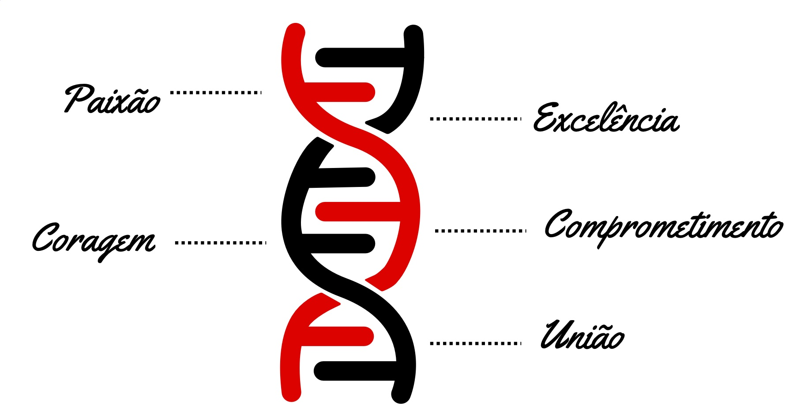

PROCESSO SELETIVO AIESEC no MACKENZIE | 2024.2
O LUGAR PARA
FAZER A DIFERENÇA
QUAL O NOSSO PROPÓSITO?
Desenvolvimento de Liderança
Nós lideramos por meio do exemplo e promovemos a liderança através de nossas ações e resultados.
Somos a maior organização de jovens líderes do mundo, sendo reconhecidos pela ONU e pela UNESCO.
Impacto Social
Através dos nossos programas de intercâmbio, visamos causar um impacto positivo nas comunidades locais, abordando questões sociais importantes e contribuindo para os Objetivos de Desenvolvimento Sustentável da ONU.
Diversidade
Procuramos aprender com maneiras diferentes de vida e com as opiniões representadas em nosso ambiente multicultural.
Promovemos a diversidade e a inclusão em nossa cultura reforçando meio do respeito mútuo e encorajando a contribuição individual de todos.
POR QUE SER UMA PESSOA MEMBRA?
VENHA SER UM LOKO!!!!!!
Aqui na AIESEC no Mackenzie , somos lokos pelo nosso propósito e nosso lema é:
100% é mínimo!
Fora a oportunidade de ter experiência na maior organização de jovens líderes no mundo, você também irá desenvolver habilidades de liderança e skills para o mercado de trabalho (como comunicação, desenvolvimento de idiomas, preparação para o mercado de trabalho e muito mais!).
Além de termos espaço para explorar novos cargos, ao final da sua experiência você receberá o certificado de trabalho de voluntário e a oportunidade de fazer um dos nossos intercâmbios com um desconto especial para quem faz parte da membresia!

AFINAL, COMO FUNCIONA?
Para participar do nosso Processo Seletivo, é necessário cumprir os requisitos de membresia citados abaixo. Após passar pela trilha, você será alocado para alguma de nossas áreas, onde fará parte de uma equipe e terá um treinamento específico para seu cargo de atuação.

Naomi
Account Manager
@naomii_suguimoto
Entrei na AIESEC no Mackenzie (@MK) em 2023.2 em Vendas e Aquisição de Talentos. Desde então, tive uma visão holística da organização durante os períodos de capacitação semestrais, trabalhar em conjunto com aiesecers e de várias as áreas e partes do mundo além de colocar projetos como essa landing page em prática. Por fim, pude fazer meu intercâmbio por um preço mais acessível por ser membro, vivendo o impacto.
Os amigos que fiz na @MK que pretendo levar para a vida e os aprendizados foram determinantes para meu amadurecimento e primeiro emprego.
Nath
Manager GTe
@NathTalentosaEntrei na AIESEC no Mackenzie💯 no time de Vendas do Produto Voluntário Global. Neste ambiente, aprimorei minha oratória, utilizei gatilhos mentais, gerenciei tempo e projetos, e desenvolvi meu senso de urgência trabalhamos em equipe e busquei ajuda sempre que necessário. Me tornei mais confiante, trabalhamos em equipe e busquei ajuda sempre que necessário. Estar aqui é gratificante, nos tornamos agentes de impacto, é uma experiência que eu recomendo muito para qualquer um que busque desenvolvimento pessoal e profissional!
REQUISITOS
- Viver os valores da organização;
- Ter entre 18 e 30 anos;
- Disponibilidade para dedicar entre 15h e 20h semana (atualmente trabalhamos de forma híbrida, com alguns encontros presenciais no mês);
- Disponibilidade em alguns sábados para eventos pontuais;
- Presença nas reuniões gerais com horário a definir;
- Presença em 2 conferências (eventos) locais realizadas ao longo do semestre;
- Presença em demais eventos obrigatórios.
*Com relação aos eventos, todas as datas e horários são avisadas com antecedência!
Seleção
O QUE É O Dna de um loko?
Aqui na Aiesec do Mackenzie, ou melhor: @MK, nosso DNA são nossos valores. Esses adjetivos correm nas veias dos nossos membrinhos, somos LOKOS pelo escritório, LOKOS pelo nosso propósito e LOKOS para inspirar liderança. Paixão; Excelência; Coragem; Comprometimento & União, isso te faz um LOKO. Estamos ansiosos pela sua aplicação, após a experiência em nossa organização, você não será mais o mesmo. Bora se inscrever??? Ah, e não esquece: pra ser um aieseco, 100% é o mínimo!!!!!